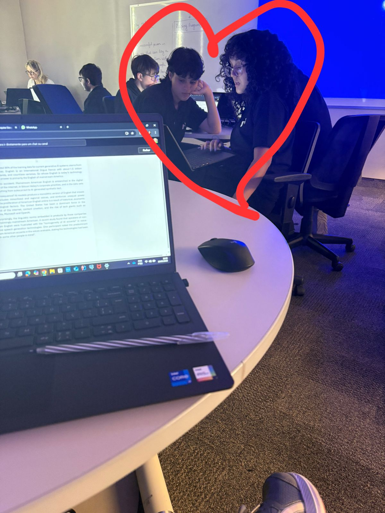
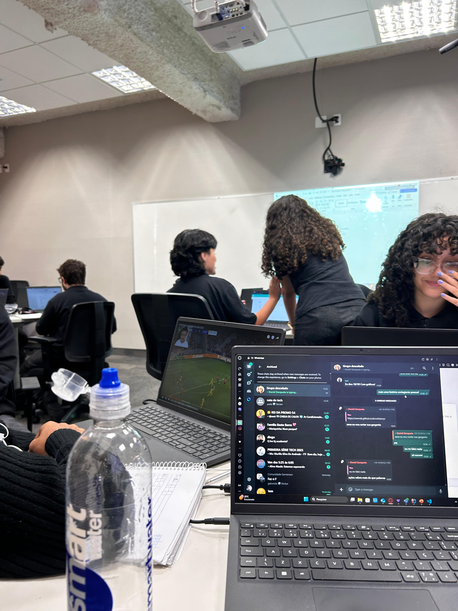

ENZIEL
Sala de aula, 13h57
O grupo do projeto interdisciplinar se reúne mais uma vez,
entre
folhas
amassadas, apresentações inacabadas e um misto de café frio
e
ansiedade
coletiva. A professora já tá quase entrando na sala e, como
sempre, nada
está pronto.
Pedro Sena, com uma fita de durex grudada no cabelo e dois
lápis
enfiados na orelha, grita:
— MANO, E SE A GENTE APRESENTASSE COM UM ROUXINOL DE VERDADE?
IA
SER
FODA!
Duda Rosa, com uma lista na mão e a veia da testa prestes a
explodir:
— PELO AMOR DE DEUS, PEDRO! ISSO É UM PROJETO SOBRE
SUSTENTABILIDADE,
NÃO UM SAFARI!
Iuri, que até então estava fingindo que lia o slide mas na
real
tava no
TikTok:
— Se o rouxinol for reciclável talvez funcione…
Pedro: — É ISSO, IURI! VOCÊ ME ENTENDE, CARA!
Duda: — EU VOU TER UM AVC COM VOCÊS!!!
14h03, o caos instaurado
Enzo, encostado na parede, completamente alheio, mexe no
cabelo
com gel
e diz:
— Relaxa, galera. É só improvisar. Eu apresento qualquer
coisa
com
carisma.
Daniel, do outro lado da sala, quase engolindo o cabo do
notebook
de
nervoso, murmura:
— Com carisma… ou com essa camiseta
apertada
aí, né, Enzo…
Pedro: — OPA, CLIMÃO? 👀
Iuri: — Eu vi isso aí hein, Daniel…
Daniel, corando: — C-cala a boca, eu só tô… analisando o
impacto…
visual… da apresentação…
Enzo, com um sorriso cafajeste: — Se
quiser
analisar mais de perto
depois, é só chamar, nerdão.
Pedro: — AI MEU DEUS O CASAL NASCEU, EU SHIPPO
A entrada triunfal
No meio da confusão, a porta se abre com um baque seco.
Gabi aparece.
Ninguém sabe de onde ela veio. Ninguém sabia que ela estava
no
grupo.
Mas lá está ela. Com um caderno misterioso, um suéter de
tricô e
um
sorriso enigmático.
Gabi: — Oi, gente. Fiz os slides. Em ordem, com gráfico, QR
Code
e
versão em inglês. E imprimi as fichas pra banca
avaliadora.
Silêncio.
Duda (em prantos): — EU TE AMO, GABI
Pedro (aos gritos): — TU É UM ORÁCULO, UMA SACERDOTISA DO
GOOGLE
SLIDES
O colapso
Liu, que ninguém lembrava que fazia parte do grupo, surge
brevemente na
chamada do Meet projetada na lousa:>
— Tá tudo pegando fogo aí? Que bom. Desliguei só pra saber
mesmo.
Desconecta.
Pedro: — ELE É UM ÍCONE MISTERIOSO
Gabi: — Ignorem. Temos 4 minutos pra revisar.
Daniel e Enzo estão perigosamente perto um
do
outro agora, trocando
olhares que gritam “a gente finge que é zoeira mas não
é”.
Pedro (sussurrando pro Iuri): — Mano, se eles se pegarem no
final
da
apresentação, isso vai salvar nosso TCC.
Iuri: — Acho que vale mais ponto que bibliografia,
inclusive.
Depois da apresentação
O grupo sai da sala aliviado.
Duda: — Eu juro que se tiver outro projeto assim, eu abandono
vocês.
Pedro: — Mas Duda, tu ama a gente.
Gabi some de novo. Literalmente. Só o suéter fica no
banco.
Daniel e Enzo ficam pra trás,
sozinhos.
Enzo: — Você mandou bem lá com os
gráficos…
e com as piadas. Quem diria,
hein?
Daniel (timidamente): — É… acho que
você
também tem… carisma acadêmico.
Enzo sorri, se aproxima e sussurra no
ouvido dele:
— Se quiser… posso te mostrar meu TCC
oral
depois.
Fade out com Pedro gritando ao fundo:
— E EU PENSEI QUE O ROUXINOL ERA A MELHOR IDEIA!!!
Pátio da escola, final da tarde
O sol já tá se pondo, deixando tudo num tom meio laranja,
meio
filme
indie. O pátio tá vazio. Só Daniel e
Enzo
ficaram pra trás, sentados no
mesmo banco onde a Gabi desapareceu misteriosamente (de
novo).
Enzo tá com aquele jeitão confiante de sempre, mas dá pra ver
que
ele tá
nervoso. Pega uma pedrinha do chão, joga longe, respira
fundo.
Enzo:
— Ei, Daniel… sobre antes… Eu tava zoando. Quer dizer, não só
zoando,
sabe?
Daniel olha pra ele, o rosto meio vermelho, mas sem desviar o
olhar.
Daniel:
— Eu sei. E eu também não tava só… analisando o impacto
visual.
Os dois riem. Um silêncio confortável
se
instala. E aí, devagar, Enzo se
aproxima. Daniel hesita por meio segundo… mas depois,
deixa
rolar.
Os dois
se
beijam.

É calmo, desajeitado no começo, mas cheio de vontade contida.
Como se
estivessem esperando desde a primeira vez que discutiram
quem ia
falar
primeiro na apresentação.
Pedro, que estava espionando atrás de um arbusto, grita:
— EU SABIAAAAAAA! SHIP ENZIEL É REAL!!!
Iuri (de algum lugar): — Eu dou 10/10! Com gráficos!
DUFA
Na pracinha logo ali...
A praça da igreja era o último lugar onde Rafa pensou que
estaria
numa tarde de sábado. Ela geralmente curtia o sol em cima do
telhado
de casa, fone no ouvido, Charlie Brown Jr. no talo, cigarro
na
mão.
Mas hoje, algo a puxou ali — talvez fosse curiosidade,
talvez
fosse
o som suave de um violão ao longe.
No coreto, cercada por umas cinco pessoas sentadas em
círculo,
estava ela: Duda Rosa. Vestido florido, cabelo preso com uma
fitinha
branca e uma Bíblia no colo. Tocava e cantava uma daquelas
músicas
que Rafa nunca lembrava o nome, mas que sempre tinham
"Jesus" ou
"amor" no refrão. Mas o que pegou Rafa de jeito foi a
voz.
Parou de andar. Tirou um fone. E ficou só ouvindo.
— Caraca... que voz linda — murmurou,
sem
perceber que tava
sorrindo.
Duda a notou de longe. Já tinha visto Rafa algumas vezes
pela
rua,
com sua calça larga, boné virado pra trás, jeito desbocado e
olhos
que pareciam carregar o mundo inteiro. Nunca tinham se
falado de
verdade. Duda sabia que Rafa tinha fama de
"sapatona das ruas",
e
isso não era um problema pra ela — o problema era que sempre
travava
perto da Rafa.
Duda terminou a música e se aproximou, segurando o violão com
carinho.
— Oi... você é a Rafa, né?
Rafa assentiu, surpresa.
— Tô chocada que você sabe meu nome, crente famosa.
Duda riu.
— Não sou famosa, só... gosto de cuidar do pessoal da
comunidade.
Ajudo como posso.
— Ajudar é cantar desse jeito? — Rafa
provocou, com aquele sorriso
de canto de boca. — Porque se for, parabéns. Tua voz
ficou
linda.
Tipo, de verdade.
Duda corou. Sentiu o rosto queimar como
se
tivesse sido pega em
pecado.
— Obrigada... fico feliz que tenha gostado.
Rafa se aproximou mais um pouco,
encarando
Duda de perto. Ela
cheirava a lavanda e sol. Um contraste absurdo com o
cheiro
de
fumaça e suor que Rafa carregava, mas por algum motivo,
aquilo só a
fez querer chegar ainda mais perto.
— E aí, você sempre canta sobre Jesus ou às vezes rola um
Charlie
Brown?
Duda sorriu, sem negar nem confirmar.
— Nunca tentei. Mas... se você me ensinar, posso tentar.
Rafa se espantou.
— Você quer aprender Charlie Brown comigo?
— Por que não? — Duda deu de ombros. —
Conhecer o que você gosta
também é uma forma de cuidar.
Houve um silêncio carregado de intenção. O coreto tava vazio
agora,
o céu pintado de laranja e roxo. Um vento leve balançou a
fitinha no
cabelo da Duda.
Rafa encostou no corrimão, olhando nos
olhos dela.
— Cuidado comigo, crente. Eu sou
perigo.
Duda deu um meio sorriso.
— E eu sou proteção.
Foi então que Rafa fez o que já vinha
pensando desde o primeiro
acorde: se aproximou e beijou Duda. Um beijo calmo, mas
cheio de
energia represada. Duda retribuiu, coração disparado,
sem
medo.
Porque naquele instante, entre fé e rebeldia, ela sabia:
aquilo
também era amor.
E amor, ela sempre foi ensinada a não negar.

Conflitos
Fazia duas semanas desde o beijo no coreto.
Desde então, Rafa e Duda estavam... algo. Não era namoro —
Duda
ainda se enrolava quando tentava definir aquilo. Mas
passavam tardes
juntas, riam, se tocavam com cuidado e se olhavam como se
estivessem
descobrindo o amor pela primeira vez. Rafa até tinha parado
de fumar
perto da Duda e, numa noite, colocou “Dias de Luta” pra
tocar
baixinho enquanto a crente fazia brigadeiro de colher.
Mas então, Emmanuelly apareceu.
Nova representante da turma no colégio noturno, ela era o
tipo de
garota que parecia já ter nascido pronta. Reta na postura,
cabelo
sempre preso num coque impecável, roupa passada e perfume
caro. O
tipo de menina que falava com os professores de igual pra
igual. Que
sempre sabia as respostas. Que dava um sorriso de canto e
deixava o
resto da sala em silêncio.
Rafa achou aquilo irritante. No começo.
— Cê acha mesmo que essa planilha aí vai mudar alguma coisa
na
escola? — ela soltou, na primeira reunião do grêmio
estudantil que
Duda tinha insistido pra ela ir.
Emmanuelly nem olhou.
— Não. Mas alguém precisa tentar. Diferente de quem só
aparece pra
encher o saco e fazer pose de rebelde.>
Rafa arregalou os olhos, surpresa com a resposta. Pela
primeira vez
em muito tempo, ela ficou sem fala.
No fundo, Emmanuelly sorriu. Acertou onde queria.
Nos dias seguintes, Duda percebeu. Rafa tava diferente.
Evitava os
encontros de fim de tarde. Respondia as mensagens com mais
espaço.
Tinha sempre uma desculpa nova:
"to ajudando a Manu com o grêmio",
"a gente tá bolando um projeto pra escola",
"não dá hoje, tô cansada".
Duda sentia, mas não queria acreditar. Preferia orar, pedir
clareza.
Pensava:
"Deus, se for pra ser, que seja. Se não, me mostra o que eu preciso ver."
A resposta veio numa segunda-feira chuvosa.
Duda, com o guarda-chuva rosa de bolinhas, decidiu
surpreender Rafa.
Passou na escola com uma marmitinha de pão de queijo e um
bilhete
fofo: “Pra você não esquecer de comer. Cuide de você como
cuida dos
outros ❤️ – Duda.”
Mas antes de entrar, viu pela janela
da sala de apoio: Rafa
encostada na parede, e Emmanuelly de frente pra ela,
falando baixo.
As duas riram de algo. Emmanuelly ajeitou o boné da Rafa
— o mesmo
boné virado que Duda tanto achava estiloso — e então...
beijou ela.
E Rafa retribuiu.
O mundo de Duda caiu em câmera lenta. O bilhete molhou. O pão
de
queijo esfriou. E pela primeira vez, ela sentiu a fé
vacilar.
Não chorou ali. Só andou até o ponto de ônibus, engolindo o
choro
com a mesma força que engolia os versículos nos cultos de
domingo.
Naquela noite, deitou na cama, e antes de orar, disse pra si
mesma:
— Talvez nem todo mundo mereça o tipo de amor que a gente tem
pra
dar.

Entre Perdão e Desejo
Três semanas sem se falarem.
Desde o beijo com Emmanuelly, Rafa não viu mais Duda. Tentou
mandar mensagem no primeiro dia — só um “Oi”, seco, sem
coragem de dizer mais. Ficou no vácuo.
Duda tinha sumido da praça, dos cultos ao ar livre, até das
redes sociais. Mas a cidade era pequena, e num fim de tarde
de sexta, o destino resolveu que tava na hora de acabar com
o silêncio.
Rafa entrou na padaria do centro só querendo um pingado e um
pão na chapa. E lá estava Duda, de coque bagunçado, moletom
azul-marinho e olhos baixos, folheando um caderno de música.
Sozinha numa mesa de canto.
Rafa travou.
O coração disparou no peito como se tivesse voltado pro
primeiro dia no coreto.
— Duda?
A crente levantou o olhar devagar. O sorriso não veio. Só um
suspiro.
— Oi, Rafa.
Rafa se aproximou, sem pedir. Sentou na cadeira da frente,
mordeu o lábio.
— Eu… errei. Sei que errei.
Silêncio. Duda abaixou o caderno.
— Foi só um beijo pra você?
— Não foi só um beijo. — Rafa engoliu seco. — Foi um erro. Eu
me perdi por um instante… mas o que eu senti com você, Duda,
aquilo foi de verdade. É de verdade.
Duda olhou nos olhos dela. Havia dor ali, mas também
saudade.
— Você me machucou, Rafa. Eu achei que você ia cuidar.
— Eu também achei. — Rafa segurou a mão dela em cima da mesa,
devagar. — Mas eu sou boa em fugir. Sempre fui. Você me viu
de verdade, e isso me assustou.
Duda apertou os olhos, e uma lágrima teimosa caiu. Rafa
enxugou com o polegar.
— Eu não tô pedindo pra você confiar em mim de novo de uma
hora pra outra. Só quero… tentar. Do seu jeito. No seu
tempo. Mas com a verdade dessa vez.
Silêncio.
Então, Duda levantou, puxou Rafa pela mão e a levou pra fora
da padaria, até a rua vazia com cheiro de pão e chuva
recente. Ali, sem plateia, sem Emmanuelly, sem julgamentos,
ela olhou fundo nos olhos de Rafa.
— Me promete que dessa vez… se for pra ir embora, você fala.
Mas não some.
Rafa assentiu, com os olhos cheios.
— Prometo.
E então, Duda a beijou.
Não foi como o do coreto — tímido e calmo. Foi intenso,
urgente, carregado de saudade e raiva e amor e fé. Um beijo
que parecia dizer:
"Eu te perdoo, mas me prova que vale a pena."
Quando se afastaram, Rafa sorriu, com a testa colada na
dela.
— Tua voz ainda é a coisa mais linda que eu já ouvi. Mas
quando você me beija assim… eu quase esqueço como se
respira.
Duda sorriu, finalmente.
— Então respira direito… porque eu não vou te beijar só uma
vez.
GARAPHA
Maré Alta
Era fim de tarde na praia. O céu estava tingido de laranja e
rosa, e o grupo já estava espalhado na areia depois do
futebol. Rafa estava jogada na canga, rindo de alguma piada
sem graça do Léo, quando viu Gabi chegando.
Gabi vinha de chinelo, short jeans rasgado, óculos escuros, e
uma expressão que dizia "não me encham o saco". Mas mesmo
com a cara fechada, Rafa sorriu. Tinha alguma coisa na Gabi
que fazia seu estômago revirar — talvez fosse o jeito
rabugento dela, talvez o jeito como ela fingia que não
ligava pra nada, mas sempre aparecia.
— Tava difícil sair da cama hoje? — Rafa provocou, quando
Gabi se jogou ao lado dela.
— Difícil foi decidir se valia a pena me queimar por causa de
vocês — Gabi respondeu, tirando os óculos. — Mas aí lembrei
que você ia estar aqui.
Rafa arqueou uma sobrancelha, surpresa. Gabi normalmente
disfarçava melhor. Mas hoje parecia... mais direta.
— E isso é bom ou ruim? — Rafa perguntou, rindo.
— Depende — Gabi respondeu. — Você vai me passar o protetor
ou não?
Rafa pegou o tubo e espremeu na mão, começando a espalhar nas
costas de Gabi. A pele dela estava quente do sol, mesmo com
a rabugice toda. Quando terminou, Gabi se virou devagar, os
olhos presos nos de Rafa.
— Sabe — Gabi começou, fingindo neutralidade —, eu não sou
boa com essas coisas melosas.
— Não precisa ser. Eu também não sou — Rafa respondeu, já
sentindo o coração acelerado.
Gabi deu um meio sorriso, quase
irônico, quase doce. Então se
aproximou. O beijo veio sem aviso, sem trilha sonora de
filme, sem plateia. Só as duas e o som das
ondas.
Quando se separaram, Gabi sussurrou:
— Agora pode dizer que valeu a pena
sair da cama?
Rafa riu, ainda de olhos fechados.
Sem Fugir
A noite caiu e o grupo ainda estava na areia. Alguém trouxe
um violão, as luzes do quiosque ao lado piscavam fracas, e a
lua refletia inteira no mar calmo. Rafa estava com os pés
enterrados na areia, observando as ondas em silêncio.
Gabi apareceu ao lado dela com duas
latinhas de refrigerante
e entregou uma sem dizer nada. Sentou-se perto, tão perto
que os braços se encostaram de leve. Ficaram assim por um
tempo, sem pressa, só ouvindo a brisa e as conversas ao
fundo.
— Você tá quieta — Gabi comentou, olhando pro horizonte.
— Tô só... absorvendo. Esse lugar, você, tudo — Rafa
respondeu, virando o rosto pra encarar Gabi.
Gabi desviou o olhar, meio sem saber o que fazer com aquele
tipo de sinceridade. Mas, em vez de responder com alguma
ironia, só soltou um riso breve e balançou a cabeça.
— Cê é muito boba. Mas... eu gosto disso.
Rafa se inclinou um pouco, olhando direto nos olhos dela.
— Gabi, cê sempre dá um jeito de se
esconder. Mas agora não
precisa, tá?
Gabi respirou fundo, como se fosse dizer
alguma coisa, mas
não disse. Apenas se aproximou e beijou Rafa de novo. Dessa
vez mais demorado, mais entregue. Sem fingir que era por
brincadeira ou impulso.
O beijo terminou devagar, com a testa de uma encostada na da
outra.
— Tô tentando não fugir — Gabi murmurou. — Mas você me
assusta um pouco, sabia?
— Que bom — Rafa respondeu com um sorriso. — Porque eu também
tô com medo. Mas isso só significa que vale a pena.
Gabi riu baixo, pegou na mão de Rafa e entrelaçou os dedos.
Pela primeira vez em muito tempo, parecia que as duas
estavam exatamente onde deviam estar.
Ele Namora (Mas não comigo...)
— Ele namora! — gritou Iuri do nada, com a boca cheia de
Doritos, apontando pro Davi Liu, que estava a exatos 30
centímetros de distância da Duda.
Duda piscou
devagar, sem entender. Ela só tinha perguntado onde ficava o
carregador da caixa de som.
— Cala a boca, mongol —
Davi respondeu, empurrando o ombro do amigo com uma
almofada. — Tu tá atrapalhando o processo, parça.
—
Que processo? Você tá me entregando o carregador ou tá
tentando me pedir em namoro? — Duda arqueou a sobrancelha,
divertida.
Davi corou. Duda Rosa, só de imaginar,
fica corada também.
Iuri fez o som de um
despertador e saiu correndo pela sala da casa de praia:
*"Bibi bibi bibi... emergência! Ele tá gamadinho!"*
Duda deu risada, sentando no sofá com as pernas cruzadas. A
lua entrava pela janela e deixava o clima mais manso, mesmo
com a zoeira caótica dos dois zés.
— Vocês são
idiotas — ela disse, pegando o carregador da mão do Davi. Os
dedos deles se encostaram. Ele engoliu em seco.
— Mas
idiotas românticos — Davi tentou brincar. Só que a voz saiu
meio trêmula, meio verdade demais.
Iuri voltou da
cozinha com um pacote de bolacha recheada e falou do nada,
como se fosse uma profecia:
— Ele namora, mas ainda
não sabe com quem.
Duda olhou pro Davi. Ele olhou de
volta. O tempo parou, ou talvez fosse só o Iuri gritando em
slow motion: *"OOOOOHHH!"*
— Você é insuportável —
Duda disse, sem tirar os olhos do Davi.
— E você...
me faz querer parar de ser tão idiota — ele respondeu.
Iuri largou a bolacha. Nunca tinha visto o amigo falar tão
sério.
— Então para — Duda sussurrou. E foi ela que
se inclinou primeiro. Um beijo lento, meio rindo no começo,
porque os dentes bateram, e o Davi ficou tão nervoso que
esqueceu de fechar os olhos direito. Mas foi sincero.
Quando se afastaram, Iuri bateu palmas com cara de mãe
coruja.
— Pronto. Agora ele namora mesmo.
VLENZO
Aposta Certa
Era uma terça-feira entediante no campus. Vlad usava sua
blusa cropped preta, sentando de perna cruzada no banco da
praça interna da faculdade, mexendo no celular enquanto uma
notificação do aplicativo de apostas vibrava.
— "Acabou de perder R$50 no jogo do Grêmio, sua anta." — ele
murmurou pra si mesmo, rindo com deboche.
Enzo Nascimento, calça jeans apertada e boné virado pra trás,
passava ao lado com seus amigos da engenharia. Tinha aquela
vibe de hétero top que sempre reclamava de feminismo sem
saber o que era. Mas entre uma piada sem graça e outra, os
olhos de Enzo pararam — mais uma vez — em Vlad.
— Esse cara aí… parece até feito de drama — comentou um
amigo.
— E ele é bonito, vai. Só é… muito ele mesmo — Enzo
respondeu, encarando Vlad mais do que o necessário.
Vlad levantou o olhar e piscou. O Enzo fingiu que não
viu.
Na aula seguinte, estavam os dois na mesma sala de optativa —
“Psicologia do Comportamento” — e, por um acaso cruel (ou
divino?), foram colocados no mesmo grupo de trabalho.
— Enzo, Vlad, vocês fazem juntos a parte sobre tomada de
decisão impulsiva — disse a professora.
— Ah, isso é minha especialidade — Vlad sorriu malicioso.
— Impulsivo você é mesmo. Apostar que o Vasco ia ganhar fora
de casa é burrice — Enzo respondeu, e Vlad riu alto.
— E você entende de futebol? Pensei que só entendesse de whey
protein.
O clima era afiado, mas algo ali começou a brilhar entre os
dois. Vlad puxou o celular.
— Quer apostar, Enzo?
— Apostar o quê?
— Que até o fim do trabalho, você vai me beijar.
Enzo engasgou com o próprio cuspe.
— Tá maluco?
— R$100.
Enzo arregalou os olhos.
— Tá achando que beijo é moeda agora?
— Ué, seu orgulho de hétero top vale mais que isso?
— …faz R$200.
Eles apertaram as mãos. E tudo começou.
As semanas passaram. Vlad era uma provocação constante —
cutucava, se aproximava demais, fazia piadas de duplo
sentido. Enzo fingia desprezo, mas tava ficando difícil.
— Por que você é assim, velho? — perguntou Enzo um dia,
depois de uma apresentação em que Vlad o elogiou
descaradamente na frente da turma.
— Porque eu gosto de desconcertar quem acha que tá sempre no
controle. E porque você me acha gostoso, mas finge que não —
Vlad respondeu sério, pela primeira vez.
Enzo ficou mudo.
No último dia do trabalho, os dois estavam sozinhos na
biblioteca do bloco velho. A energia era elétrica, o
silêncio, pesado.
— Então… perdeu a aposta — disse Vlad, se levantando e
pegando a mochila.
— Espera.
Vlad parou. Enzo estava encostado na parede, as mãos no bolso
da calça, visivelmente nervoso.
— Se eu te beijar agora… você vai rir de mim?
— Só se você usar a língua com pressa.
Enzo deu um passo. Depois outro. E sem dizer nada, o beijo
aconteceu. Lento. Incerto. Mas verdadeiro. O tipo de beijo
que muda os rumos das coisas.
Quando se separaram, Enzo estava com os olhos baixos.
— Que merda foi essa?
— Isso se chama “química”. Ou talvez “curiosidade”. Ou…
“perda de aposta”.
Enzo riu, nervoso.
— Você é um problema, Vlad.
— E você é um hétero top que acabou de perder R$200 e um
pouquinho da heterossexualidade. Quer receber em Pix?
JUDO
Era uma manhã abafada de quinta-feira. Duda Rosa tinha
chegado cedo, com a Bíblia dentro da mochila e o coração em
oração silenciosa: “Senhor, me ajuda a não travar na
parte do INNER JOIN…”
A professora entra na sala:
— Duplas pra prova de Banco de Dados, hein? Façam com
sabedoria. Ah, e nada de olhar na internet.
Duda olha pra trás e vê João Pedro. Camisa branca, violão no
fundo da sala (porque ele sempre leva), cabeça
baixa, orando baixinho. Ela sente uma paz estranha. E uma
faísca.
— João… quer fazer comigo?
— O banco de dados?
— É.
— Claro, irmã. Bora firmar essa aliança aí — ele responde
sorrindo, com a calma de quem confia mais em Deus que no
próprio estudo.
Eles sentam lado a lado. O tempo passa. Um começa a completar
a fala do outro, as tabelas se tornam mais fáceis de
entender, e quando a Duda vê… o João fez até a query da
PROCEDURE de memória.
— Gente do céu — ela diz, surpresa.
— Gente não. Deus. — ele responde, e os dois riem
baixinho.
Na hora de entregar a prova, ela solta:
— A gente formou uma dupla boa, né?
— Foi mais que boa. Foi divina.
Na semana seguinte, João aparece com um trecho de música
nova.
— Deus me deu isso ontem de madrugada, ó — ele diz, mostrando
o caderno:
"Em meio ao código e à confusão,
Tua paz é meu SELECT no coração."
Duda ri.
— Você colocou SQL na letra?
— Sim! Eu queria te mostrar porque… enfim… achei que você ia
entender.
Ela segura o papel, e ele segura o olhar dela por alguns
segundos a mais.
— João, você acha errado… sei lá… sentir algo diferente por
alguém da igreja?
— Errado? Não. Se for de Deus, é lindo. Só tem que ser com
oração. E propósito.
O silêncio fica grande. Eles estão ali, a Bíblia entre os
dois, mas também algo mais. Algo não dito.
— Então… ora por mim?
— Claro. Mas vou orar por nós dois. Pode ser?
Ela sorri, emocionada.
E ali, sem gritos, sem alarde, só no sussurro do Espírito e
no calor de um toque de mão meio sem querer, algo
começa.
Era sexta à noite. O grupo de jovens estava reunido pra
vigília no salão da igreja. Luz baixa, louvor rolando. João
Pedro cantava no palco, olhos fechados, voz embargada.
— “Teu amor me alcançou… mesmo quando eu não
via”
Duda estava sentada, coração acelerado. Não era só a presença
de Deus — era algo a mais. Era o João. E aquela música.
No final do louvor, ele desce do palco e vai direto até
ela.
— Posso te mostrar uma última parte da música?
— Agora?
— Agora.
Eles saem discretamente e vão até a área externa da igreja,
perto da árvore grande que todos chamam de “Monte Sinai” só
por zoeira.
João tira do bolso um papel dobrado e lê:
"E quando tua mão tocou a minha,
O céu inteiro fez silêncio.
Não sei se foi o Espírito,
Ou se era só você mesmo."
Duda ri, nervosa.
— João…
— Eu orei. Muito. E pedi confirmação.
— E?
— Deus confirmou. Três vezes. E uma delas foi quando você
corrigiu meu SELECT na prova com amor e sem me humilhar.
Ela sorri. Ele chega mais perto.
— Duda… posso?
Ela não responde. Só fecha os olhos.
O beijo acontece devagar. Com carinho. Sem pressa. Sem
culpa.
Era mais que um beijo. Era um “amém”.
Quando se afastam, ainda de olhos fechados, Duda diz
baixinho:
— Agora sim… essa query rodou certo.
E os dois riem até quase perder o fôlego.
LIGUS
O som das ondas batendo na areia mal cobria o riso do
Liu, escandaloso como sempre, enquanto ele empurrava
Gustavo de leve com o ombro.
— Você é muito chato, véi! — disse, com aquele
sorriso safado que fazia o estômago do Gustavo virar
uma ginástica olímpica.
Gustavo revirou os olhos e cruzou os braços. — Pelo
menos eu não fico dando em cima de todo mundo,
né?
— Ciúmes? — Liu se aproximou, ficando tão perto que
Gustavo pôde sentir o cheiro do protetor solar com
menta e o calor da respiração dele.
Gustavo engoliu seco, mas tentou manter a pose. — Eu?
Jamais.
— Aham. Então por que tá vermelho, baixinho?
— Porque o sol tá forte, idiota — murmurou,
desviando o olhar, mas sem conseguir dar um passo
pra trás.
Liu riu, mas dessa vez mais baixo, quase gentil. Ele
levantou uma mão e tocou de leve o queixo do
Gustavo, fazendo-o olhar pra ele de novo.
— Sabe, você é até fofo quando tá irritado — disse, e
os olhos dele não estavam mais rindo. Agora estavam
sérios. Quase carinhosos.
Gustavo nem teve tempo de responder. Liu se aproximou
de vez e o beijou.
Foi rápido, quente, meio desajeitado — porque Gustavo
ainda estava com os braços cruzados — mas ninguém
ali pensava em movimentos perfeitos. Só no gosto do
beijo, no calor da boca, no arrepio que veio do
nada.
Quando se afastaram, Liu estava sorrindo de novo.
— Chato. Mas beijando, até que presta.
Gustavo só conseguiu empurrar ele de novo, agora com
um sorriso torto. — Cala a boca.
Mas não deu nem dois passos antes de puxar Liu pela
camiseta e beijá-lo de novo.